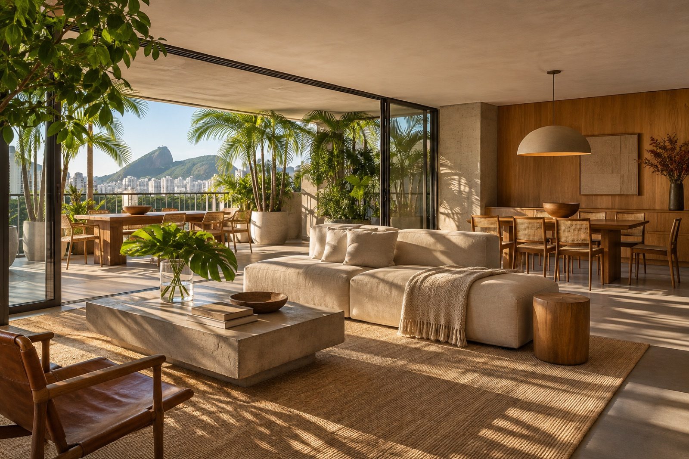

Explore dois conceitos residenciais pelas características da fachada, dos espaços comuns e dos ambientes internos.
Jardins do Pátio

Fachada com terraços e paisagismo tropical
Um conjunto residencial em torno de um pátio arborizado. Terraços profundos dão sombra às fachadas, e o jardim central liga os acessos e áreas de encontro.
Casa Entre Folhas

Interiores com varanda integrada
Um apartamento pensado para alternar entre convívio e descanso. A sala se abre para a varanda, e a marcenaria concentra armazenamento junto à circulação.